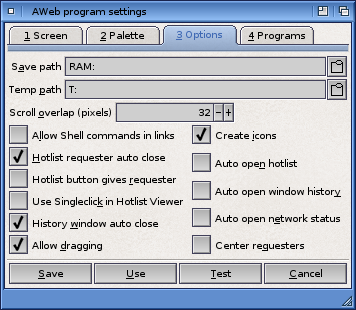

Program settings: Options

Save path
AWeb will always ask where to save a downloaded file, or the HTML source when using the "Project->Save As..." menu item. The default save path will be the initial drawer used in the save file requester.
This is the path used for temporary files. These include files passed to external viewers, and images that are not cached.
Scroll overlap
If you scroll up or down by a page, there is some overlap. Because you might want to have a larger overlapping area when you are using a larger font, you can change the overlap size.
Set this gadget to the desired overlap size, measured in pixels.
AWeb offers a powerful facility to execute Shell commands just by clicking a hyperlink or submitting a form.
Although this feature can be very useful, it could also cause severe damage if an undesired command like FORMAT would be executed. Therefore this feature is disabled by default. Select this checkbox to enable it.
If this checkbox is selected, the hotlist viewer window will close automatically if you follow a link in that window. If this checkbox is not selected, the window remains open until you close it yourself.
If this checkbox is selected, the hotlist button will open the hotlist viewer window. Otherwise, the hotlist is displayed in the browser window.
If this checkbox is selected, you only need to single-click an entry in the listview of the Hotlist Viewer window to follow the URI.
If this checkbox is selected, the history window will close automatically if you pick a document from the window to display. If this checkbox is not selected, the window remains open until you close it yourself.
If this checkbox is selected, clipboard drag-selecting is enabled by default.
If this checkbox is checked, AWeb will create an icon for each file that was saved or downloaded. If it is a text file (HTML or plain text), it sets AWeb as the default tool so you can easily view the text with a doubleclick on the icon.
These checkboxes determine if the hotlist viewer window, the history window and the network status window should automatically be opened when you start AWeb.
You can use the "Settings->Snapshot windows" menu item to save the positions where these windows should open.
Use this checkbox to determine if requesters (error requesters, confirmation requesters, etc.) open in the center of the screen, or in the top left corner.
 Palette
Palette  Settings requesters
Settings requesters  Programs
Programs